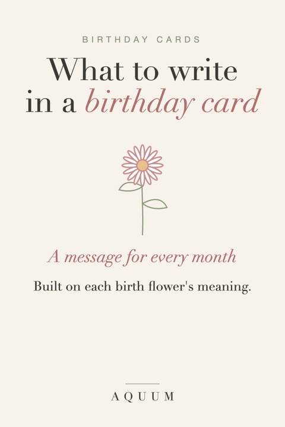

What to Write in a Birthday Card: Messages for Every Birth Month
2026-10-03
Written by the team behind Aquum, a small birth flower gift shop. How we make money.

The card is often the part of a gift people keep. The trouble is the blank space inside: "Happy birthday!" feels thin, and a long paragraph feels like too much. A trick that works is to borrow a meaning. Every month has a birth flower, and every flower says something, so the card can say it too.
Below are messages for each month, written around its flower, followed by wording for different people in your life. Mix and match: one line from the month, one personal line from you.
Not sure of their flower? The birth flower finder tells you from a birthday.
A simple formula
- The flower and what it means: "Your birth flower is the daisy, and it stands for joy."
- Why it fits them: "Which makes sense, because you bring it into every room."
- A wish for the year: "I hope this year gives a little of it back to you."
Three sentences, and it reads as if you thought about it, because you did.
Messages by birth month
January: carnation
The carnation means love that doesn't give up.
- "Your flower is the carnation: love that lasts. Thank you for being someone I can count on, every single year."
- "January gets the carnation, the flower of steady love. It suits you. Happy birthday."
- "A new year and a new age at the same time. Here's to both."
February: violet
The violet stands for quiet loyalty.
- "The violet is your flower, and it means loyalty. You've been that for me more times than I can count."
- "Quiet, faithful and lovelier than it lets on: that's the violet, and that's you."
March: daffodil
The daffodil means new beginnings.
- "Your birth flower is the daffodil, the first sign of spring. Here's to a year of good new starts."
- "Daffodils mean new beginnings. May this birthday be the start of your best chapter yet."
April: daisy
The daisy stands for uncomplicated joy.
- "The daisy is April's flower and it means simple joy. You make ordinary days better, and I'm grateful."
- "Wishing you a year as cheerful as your birth flower."
May: lily of the valley
The lily of the valley means happiness returning.
- "Your flower is the lily of the valley: the return of happiness. May this year bring back everything good."
- "Small, sweet and stronger than it looks: the lily of the valley, and you."
June: rose
The rose means love in all its forms.
- "June's flower is the rose, so this card comes with all the love it stands for."
- "Of course your birth flower is the rose. Happy birthday to someone easy to love."
July: larkspur
The larkspur stands for an open heart.
- "The larkspur means an open heart, and I can't think of a better description of you."
- "Here's to your open heart, your big laugh and another year of both."
August: gladiolus
The gladiolus means strength of character.
- "Your flower is the gladiolus, the flower of strength and integrity. You've shown plenty of both this year."
- "Tall, bold and impossible to ignore: happy birthday from one of your biggest fans."
September: aster
The aster stands for wisdom and patience.
- "September's flower is the aster: wisdom and patience. Thank you for sharing yours with me."
- "The aster looks like a little star. Wishing you a year that shines."
October: marigold
The marigold means warmth that stays.
- "Your birth flower is the marigold, and it means warmth. Being around you feels exactly like that."
- "Bright, warm and golden: the marigold, and the person who gets this card."
November: chrysanthemum
The chrysanthemum stands for honest friendship.
- "The chrysanthemum is your flower and it means honest friendship. Lucky me, getting yours."
- "Here's to good fortune, long life and many more birthdays, which is exactly what the chrysanthemum promises."
December: paperwhite
The paperwhite means good wishes for what's ahead.
- "Your flower is the paperwhite, the flower of good wishes. So here are mine: health, rest and a wonderful year."
- "A December birthday deserves its own celebration, not just a corner of Christmas. This one is all yours."
Want the full meaning behind each one? See flower meanings from A to Z, or the second birth flowers if you'd like a less expected flower.
Messages by who it's for
For a friend
- "Another year of you being the person I call first. Happy birthday."
- "Your flower means [meaning]. I'd have said [one thing they do], but the flower put it better."
For mom or grandma
- "Your flower is the [flower], and it means [meaning]. You taught me what that looks like."
- "Thank you for every birthday you made special for me. This one's for you."
For a partner
- "Of all the days in the year, this is my favorite one to celebrate."
- "Your flower and mine side by side: their flower] and [your flower]. I like how they look together." More ideas in our [anniversary gifts guide.
For a coworker
- "Happy birthday! Your birth flower is the [flower], which apparently means [meaning]. Seems accurate."
- "Wishing you a relaxing birthday and a year of fewer meetings."
For a child
- "Your birth flower is the [flower]. It means [meaning], just like you."
- "Happy birthday to the bravest, funniest [age]-year-old I know."
When you don't know them well
Keep it short and warm. "Wishing you a lovely birthday and a great year ahead" is always fine. Adding their flower makes it feel more personal without pretending to know them better than you do: "Your birth flower is the aster, a little star. Hope your year shines."
A card to write it in
Our free printable birth flower birthday cards have each month's flower and its meaning on the front and plenty of room inside for your message. Print at home on cardstock; they fit a standard A2 envelope. Need a tag for the gift too? There are matching gift tags.
And if you're still looking for the gift itself, our birthday gift ideas by month start from the same flowers.